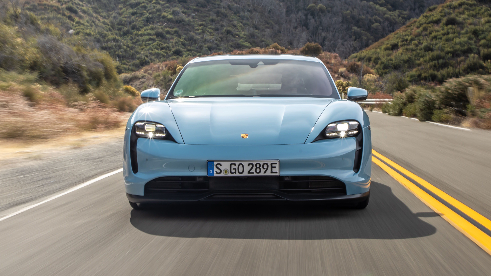
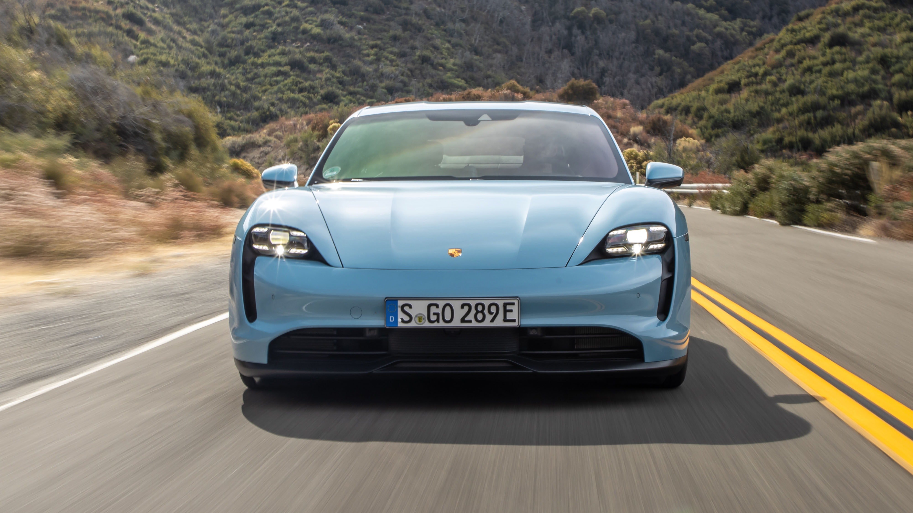
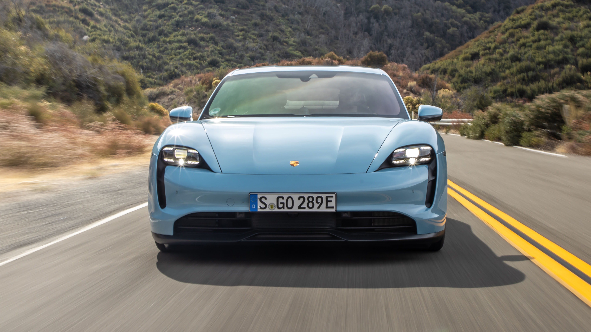
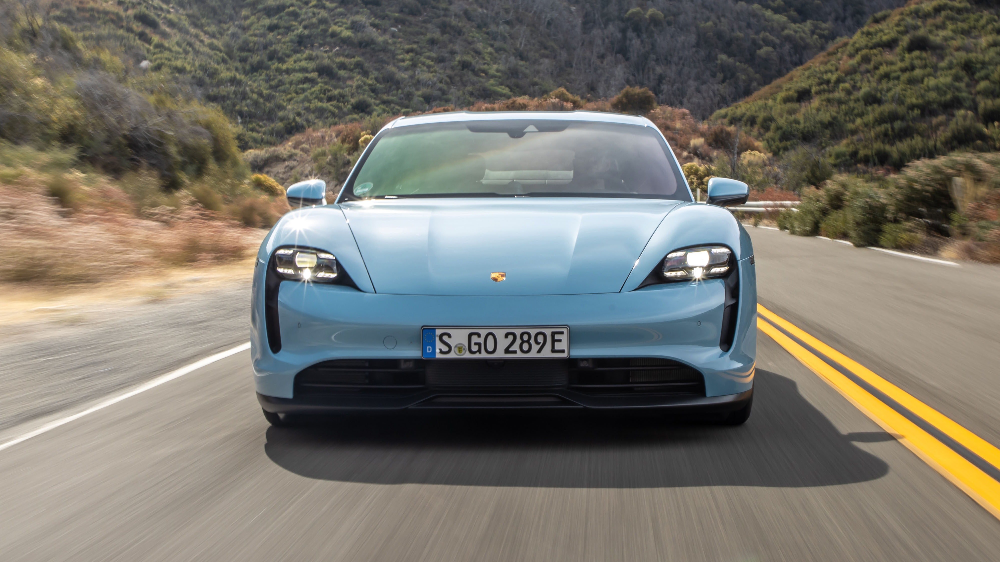

 

In dieser Datenvisualisation werden wir Autoverkäufe in Deutschland auf ihre Marken analysieren und visuell darstellen.
Besonderer Fokus im Untersuchungsgegenstand liegt auf der Betrachtung der Motortypen und deren Veränderung auf dem Markt.
Grosse Marken wie Volvo und VW rüsten immer mehr auf Elektromotoren um. In dieser Untersuchung möchten wir diese Veränderung auf dem Markt visualisieren.
Das Datenset, verfügbar auf Kaggle, umfasst Fahrzeugdaten von der Autoscout24-Plattform, die zwischen 2011 und 2021 gesammelt wurden. Es enthält spezifische Informationen zu 46’405 dokumentierten Fahrzeugverkäufen, einschliesslich Hersteller, Modell, Kilometerstand, Verkaufspreis und Datum der ersten Inverkehrsetzung der Fahrzeuge. Diese Daten bieten eine wertvolle Ressource für die Analyse von Automobilmarkt-Trends in diesem Zeitraum.

https://www.kaggle.com/datasets/ander289386/cars-germany
https://d3-graph-gallery.com/
https://www.design-fieldtrip.com/read/2023-bmw-7-series-i7-car-design-analysis
https://auto360.de/bugatti-chiron-faehrt-weltrekord-0-400-0-kmh-in-42-sekunden
https://www.carpixel.net/wallpapers/19593/2020-mercedes-amg-glc-43-us.html
https://auto.goodfon.com/ford/wallpaper-ford-mustang-shelby-gt350r-2016.html
https://www.autoblog.com/2021/07/26/2022-porsche-cayenne-turbo-gt-review/
https://www.topgear.com/car-reviews/porsche/taycan/420kw-4s-93kwh-4dr-auto/first-drive
https://www.teslarati.com/tag/tsla/page/10/
https://www.cars.com/articles/2020-toyota-camry-whats-changed-419504/
https://carbuzz.com/cars/volvo/s90-hybrid/2019
https://www.carpixel.net/wallpapers/20590/2021-volkswagen-arteon-r-line-us.html
BSc Wirtschaftsinformatik
5. Semester
leander.duft@stud.hslu.ch
Major: Data Science & Data Engineering
BSc Wirtschaftsinformatik
5. Semester
sarah.kovacs@stud.hslu.ch
Major: Informatik PLUS Medizintechnik